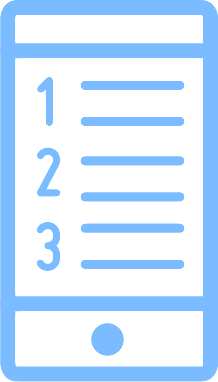

<ion-header>
  <ion-navbar >
    <ion-title>
      
    </ion-title> 
  </ion-navbar>
</ion-header>

<ion-content padding>
  <ion-grid>
    <ion-row justify-content-center align-items-center>
      <!---->
      <button ion-button class="test" clear color="light" (click)="getUrgencePage()">
        <span class="text-button_home">Contacter<br>urgences</span>
      </button>
    </ion-row>
    <ion-row>
      <ion-grid>
        <ion-row>
          <ion-col align-self-center col-3>
              
          </ion-col>
          <ion-col align-self-center>
            <button block ion-button outline class="button-row">Ma fiche santé</button>
          </ion-col>
        </ion-row>
        <ion-row>
          <ion-col align-self-center col-3>
                        
          </ion-col>
          <ion-col align-self-center>
            <button block ion-button outline class="button-row">Mes contacts</button>
          </ion-col>
        </ion-row>
        <ion-row>
          <ion-col align-self-center col-3>
                        
          </ion-col>
          <ion-col align-self-center>
            <button block ion-button outline class="button-row geste">Les gestes<br>qui sauvent</button>
          </ion-col>
        </ion-row>
      </ion-grid>
    </ion-row>
  </ion-grid>
</ion-content>
